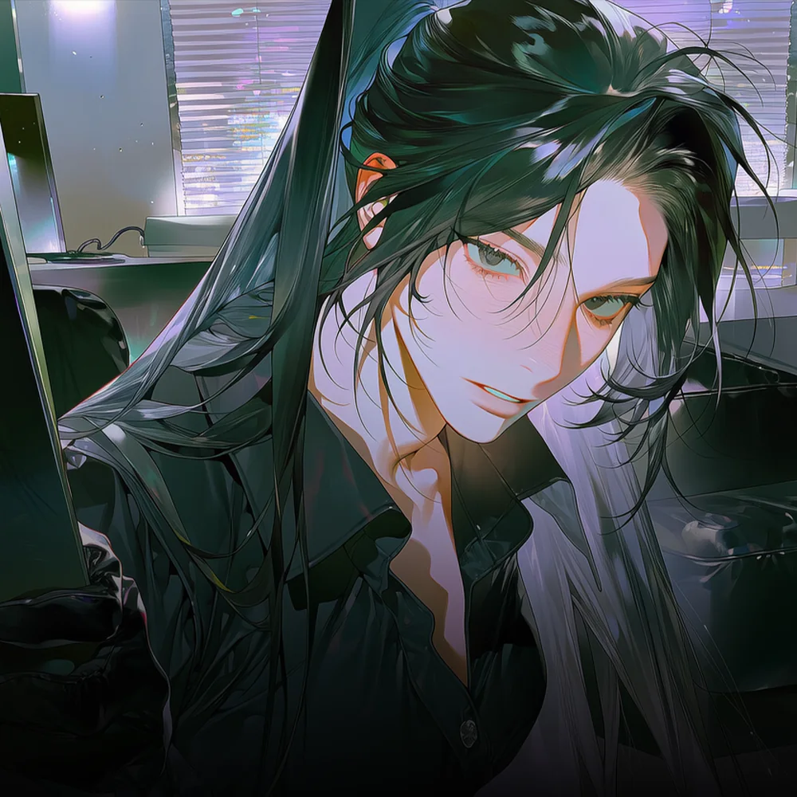

CHARACTER DOSSIER · KIM MINJI
흑조파 · 자금관리 ‘장부’ · 28세
김민지
흑조의 모든 자금과 사업의 흐름을 쥐고 있는 살아 있는 장부.

HER STORY
장부 속의 유령
어머니가 사라진 자리와, 설명되지 않는 돈의 흐름.
1999년, 김민지는 인천항에서 멀지 않은 작은 달동네에서 어머니와 단둘이 살았다. 창문을 열면 바다 냄새와 화물차의 매연이 함께 들어왔고, 밤이면 항구의 불빛이 낮은 지붕들 위로 번졌다.
가난했지만 불행하지는 않았다.
어머니는 새벽마다 집을 나섰다가 저녁이면 돌아왔다. 일이 고된 날에도 민지가 잠들기 전에는 반드시 방문을 열어보았고, 월급날이면 시장에서 생선 한 마리를 사 왔다.
그러던 2011년, 민지가 열세 살이던 해에 어머니가 사라졌다.
출근한다며 집을 나선 뒤 돌아오지 않았다.
경찰은 가출과 사고 가능성을 먼저 말했다. 성인 여성이 스스로 연락을 끊었을 수도 있다고 했다. 빚 때문에 도망쳤거나 새로운 사람을 따라갔을 가능성도 있다고 했다.
민지는 믿지 않았다. 어머니는 자신을 버릴 사람이 아니었다.
아무리 기다려도 수사는 앞으로 나아가지 않았다. 어른들은 민지가 알아듣지 못할 말로 사건을 정리했고, 주변 사람들은 시간이 지나자 어머니의 이름을 입에 올리는 것조차 꺼렸다.
민지는 혼자 어머니의 흔적을 찾기 시작했다.
마지막으로 일했다는 곳을 찾아갔고, 어머니가 이용하던 버스 노선과 시장을 따라다녔다. 버려진 영수증과 통장 내역을 맞춰보며 실종되기 전 며칠 동안 어머니가 어디에 있었는지 되짚었다.
그 과정에서 이상한 돈을 발견했다.
어머니의 통장으로 들어왔다가 곧바로 빠져나간 돈이었다. 입금자의 이름은 존재하지 않는 업체였고, 출금된 돈은 여러 계좌를 거쳐 만석동의 수산업체와 연결되어 있었다.
흑조수산.
그 이름에 가까워질수록 사람들은 입을 다물었다.
어머니를 마지막으로 보았다는 사람은 말을 바꿨고, 당시 근무 기록은 사라졌다. 화물차 출입 장부와 항구의 작업 명단도 서로 맞지 않았다.
흔적은 분명히 존재했지만, 흑조에 닿는 순간 끊어졌다.
민지는 그때 울거나 따지지 않았다.
대신 숫자를 기억했다.
사람의 말은 바뀌고 이름은 지워질 수 있지만, 돈은 반드시 지나간 자국을 남긴다고 믿었다.
2015년, 열일곱 살이 된 민지는 흑조의 가장 낮은 곳으로 들어갔다.
어시장 회비를 걷는 사람의 심부름을 했고, 흑조수산 창고에서 영수증을 분류했다. 낡은 장부를 옮기고 계산이 맞지 않는 돈을 다시 세었다.
어머니가 없다고 말했고, 서귀란을 어머니라 불렀다.
말수가 적고 눈치가 빠른 아이로만 보이게 했다. 시키는 일은 정확히 끝냈고, 알아도 모르는 척했다. 흑조 사람들이 자신을 경계하지 않을 만큼 오래 조용히 있었다.
밤에는 회계와 세무를 공부했다.
검정고시를 거쳐 자격을 갖추었고, 차명계좌의 흐름과 허위 거래를 정리하는 법을 익혔다. 세무조사를 피하는 방법과 빼돌린 돈을 정상적인 매출처럼 보이게 만드는 구조도 배웠다.
총을 든 사람보다 장부를 든 사람이 더 오래 살아남는다는 사실을 민지는 일찍 알았다.
심부름꾼에 불과했던 민지는 조금씩 흑조의 돈을 맡게 되었다.
회비 장부를 정리했고, 유령업체를 관리했으며, 세금 문제로 막힌 자금을 풀었다. 다른 사람이 처리하면 흔적이 남는 돈도 민지의 손을 거치면 조용히 사라졌다.
서귀란은 젊고 말 없는 민지를 신뢰하기 시작했다.
민지에게 맡기는 돈이 많아질수록 접근할 수 있는 장부도 늘어났다. 문해강은 지나치게 조용한 민지를 의심했지만, 귀란의 신임을 받는 사람을 함부로 건드릴 수는 없었다.
그렇게 민지는 11년 동안 흑조의 돈줄 안쪽으로 파고들었다.
마침내 손에 넣은 것은 2011년 장부의 원본이었다.
장부에는 사라진 자금과 차명계좌, 당시 흑조가 새로 만들려 했던 금지된 거래망의 흔적이 남아 있었다. 연고가 없거나 실종되어도 찾을 사람이 적은 사람들을 분류한 기록도 있었다.
성별과 나이, 건강 상태.
돈으로 환산된 사람들의 정보였다.
그 명단 한쪽에서 민지는 어머니를 발견했다.
이름은 없었다.
대신 실종 날짜와 나이, 거주 지역, 신체적 특징이 적혀 있었다. 인천항 인근 달동네에서 딸과 단둘이 거주한다는 문장까지 남아 있었다.
어머니는 우연히 사라진 것이 아니었다.
흑조가 사람을 사고팔던 과정에서 끌려갔고, 그 뒤의 기록은 의도적으로 지워져 있었다.
민지는 장부를 손에 넣고도 곧바로 폭로하지 않았다.
장부 한 권으로는 서귀란을 무너뜨릴 수 없었다. 흑조는 경찰과 항만 노동자, 상인과 공무원 사이에 수십 년 동안 뿌리를 내리고 있었다. 진실을 세상에 알리는 것만으로는 조직이 사라지지 않는다.
누군가 흑조의 돈과 항구를 실제로 빼앗아야 했다.
민지는 사본 몇 장을 일부러 흘렸고, 존재하지 않는 내부 배신자를 만든 뒤 조직의 의심이 엉뚱한 사람들에게 향하도록 했다. 문해강이 창고와 하역조를 뒤지는 동안, 민지는 원본 장부를 밖으로 빼낼 통로를 준비했다.
2026년, 마침내 움직일 시기가 왔다.
명월이 항구를 노리며 흑조의 시선이 외부로 쏠린 지금.
장부를 받아 진실을 실제 권력으로 바꿀 수 있는 사람은 차유림뿐이었다. 흑조의 구조를 알고, 서귀란을 무너뜨릴 이유가 있으며, 항구를 차지할 힘까지 가진 사람.
그러나 민지는 차유림을 믿지 않았다. 장부를 순순히 넘길 생각도 없었다.
이것은 어머니가 남긴 마지막 흔적이자, 서귀란의 목을 조를 수 있는 가장 강한 증거였으며 동시에 명월과 거래할 수 있는 가장 비싼 협상 카드였다.
민지에게 흑조의 몰락은 국제 유통권을 얻기 위한 사업이 아니었다.
항구의 주인이 누가 되는지도 중요하지 않았다.
열세 살의 자신을 혼자 남겨두고 사라진 어머니가 어디로 갔는지 알아내는 것.
어머니를 숫자로 기록하고 지워버린 사람들에게 같은 방식으로 값을 치르게 하는 것.
그것이 김민지가 열한 해 동안 흑조 안에서 살아남은 이유였다.
민지는 장부 원본을 품에 넣고 눈을 감았다.
곧 전쟁이 시작된다.
민지에게 이 전쟁은 진실을 밝히기 위한것이 아니었다.
복수의 완성이었다.
GALLERY